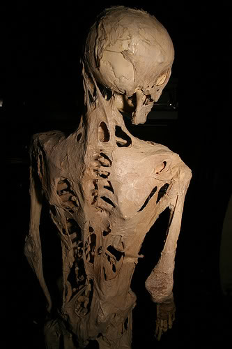

Advanced stages of Fibrodysplasia Ossificans Progressiva (FOP)
Item #: SCP-439
Object Class: Euclid
Special Containment Procedures: Specimen is to be kept at Armed Research Site-45, Hazardous Lifeforms Wing, in a sealed, locked 38 L (10 gal) Type-G containment unit with connected oxygen supply. Specimen is to be fed through Feeding Tube 16a with Approved Nutritive Substance X-F. Handling is available to Level 2 personnel and higher.
Description: SCP-439 is an insect of unknown origin, somewhat resembling a greyish, semitranslucent Forficula auricularia (common earwig), approximately 2.5 cm in length. Originally located/obtained in mainland China in the ████ ████ province. No other specimen has been found, as of yet.
SCP-439 is relatively harmless when encountered on safe terms, aside from the ability to deliver a firm, painful pinch with its abdominal forceps. The true hazard this creature poses lies in its habitat construction and reproduction, which is initiated when the specimen enters the mouth of a sleeping human. This will only occur with humans; other lifeforms have been presented to SCP-439 and have been uniformly rejected. Upon location of a suitable host, the specimen will hide itself in the immediate vicinity and wait until the victim has fallen asleep. How it is able to determine the state of sleep is unknown, but it has shown to be accurate in [DATA EXPUNGED] times out of [DATA EXPUNGED]. Upon entering the mouth of the new host, SCP-439 will travel down the trachea and take up residence in one of the victim's lungs.
In approximately 4-8 hours, after awakening, the host will complain of chest pains and shortness of breath, followed shortly by abdominal cramping. The tightness in the chest will increase as well as a fever until the host is incapacitated. It is around this time that the onset of Fibrodysplasia Ossificans Progressiva (FOP) occurs, a disorder that is normally genetic in nature that promotes growth of bone into muscle tissue. Since the production of new bone growth is so rapid, the procedure is also quite painful for the subject, with new bone spurs occasionally protruding through the flesh. While this is happening, the host will become compelled to seek shelter in a darkened, enclosed space, such as inside household cabinetry, closets, or heating ductwork.
Within the first three days without treatment, the host will become completely withdrawn and immobile due to the extreme pain of new bone growth coupled with difficulty breathing. At this point, the subject's body will begin the final stage of transformation into a "bone hive": having concealed itself in its new home, the body of the host will huddle in a foetal position. Entire portions of the skeletal structure will shift along [DATA EXPUNGED] until the host body is roughly spherical in nature and reduced to 3/4 its original size. New bone protrusions will continue to grow and, if possible, anchor the body permanently to its new location. The skeletal structure is almost completely unrecognizable, having been converted to a round "cage" to protect the internal organs and colony.
At this point, transformation is complete. The original Queen that entered the host will have produced 20-30,000 offspring that function as workers, drones and warriors in a typical insect hive hierarchy. Since only the Queen is capable of reproduction, the rest of the hive's inhabitants are, fortunately, harmless save for large, strong abdominal forceps of the warriors. The interior of the original host is nearly unrecognizable as a human body: certain organs are removed and used as food, while others are modified by the worker insects to serve as egg incubation chambers. An ingenious method exists of using the host’s own digestive system to process pieces of organic materials collected by the warriors into a nutritive slurry that feeds both the colony and sustains the host hive structure.
After 4-6 months, a new Queen will emerge from within the ranks and choose a drone to mate with. At this point, the colony will destroy itself by rupturing [DATA EXPUNGED], upon which the majority of the insects die. Workers and drones are unfit to survive outside the host hive, and warriors will abandon the site, wandering away, their tasks complete. No food will be consumed by warriors that isn't nutritive slurry produced by the hive of origin. The new Queen will venture out, fertilized, to search for her own new hive. Incredibly, the trauma of evacuation is not what finally causes biological activity to cease in the hive, but starvation.
Addendum: In a particularly disturbing development, Dr. ██████ performed a range of experiments to determine the extent of damage to the host body after it has finished the transformation into a hive. While it had been previously discovered in autopsy that portions of the brain are hollowed out to serve as food, others are left intact, presumably to regulate what bodily functions continue. During the last round of experimentation, ██████ took the opportunity to examine a hive at close range shortly after transformation. While the eyes are eventually reached and used as a food source, at the point ██████ performed her examination, they were still intact. Opening the eyelids, and examining them with a flashlight, ██████ discovered that the host's eyes followed the beam. Experimentation was terminated and no further testing is scheduled.
{kind=link}